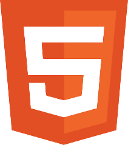

Светлана Королева
Люблю лес, собак, читать и верстку
Считаю, что добро нельзя причинить
Верю, что при наличии крутой команды можно свернуть горы
Социальные сети:
Телеграм| Вконтакте| Нельзяграм|ОБО МНЕ
Мне 27 лет. Закончила Курский государственный медицинский университет по специальности клинический психолог. За последние 8 лет прошла путь от волонтера до руководителя некоммерческой организации. Наша команда становилась победителями различных грантовых конкурсов и реализовала более 10 социальных проекто. Выгорела. Продала организацию.
Сейчас развиваюсь в том, что мне было так же интересно, как и нейропсихология - it. Я выбрала frontend, потому что в моей работе мне важно видеть результат глазами и получать обратную связь о проделанной работе, а еще в нем есть структура (такая же как и у нас в мозге).
В профессиональной деятельности ценю настоящую командную работу, а не пустые слова об этом. Не переношу токсичных людей или людей с ЧСВ.
Моя слабая сторона: мне трудно в ситуации неопределенности, например, когда мои возможности ограничены для принятия каких-либо решений, но необходимое решение никто не может принять.
Мои увлечения
- Прогулки на природе
- Чтение бумажных книг
- Смотреть сериалы
- Проводить время с собакой
Опыт работы
Он не релевантный, но может показать, мои сильные стороны - ответственность, трудовую дисциплину, опыт работы в командных проектах (и руководство ими), а еще то, что я умею делать таблички
| Лагерь "Гармония" | Психолог, вожатый, методист | 2016-2019 |
| АНО "ЦСПСКР "Феникс" | Директор руководитель проектов |
2019-янв.2025 |
| АНО ЦСД | Тьютор | 2019 |
| АНО ПРМ | Специалист по связям с общественностью старший проектный менеджер |
2020-2021 |
| МБУ ГЦСП Спектр | Начальник отдела проф. программ | 2021 - 2022 |
| ПП БЕЗ ГРАНИЦ | Руководитель, методист ведущий нейропсихолог |
2022- по н.в. |
КУРСЫ
- HTML-Академия
- Resalt University
- freeCodCamp
- Learn Git Branching
НАВЫКИ
